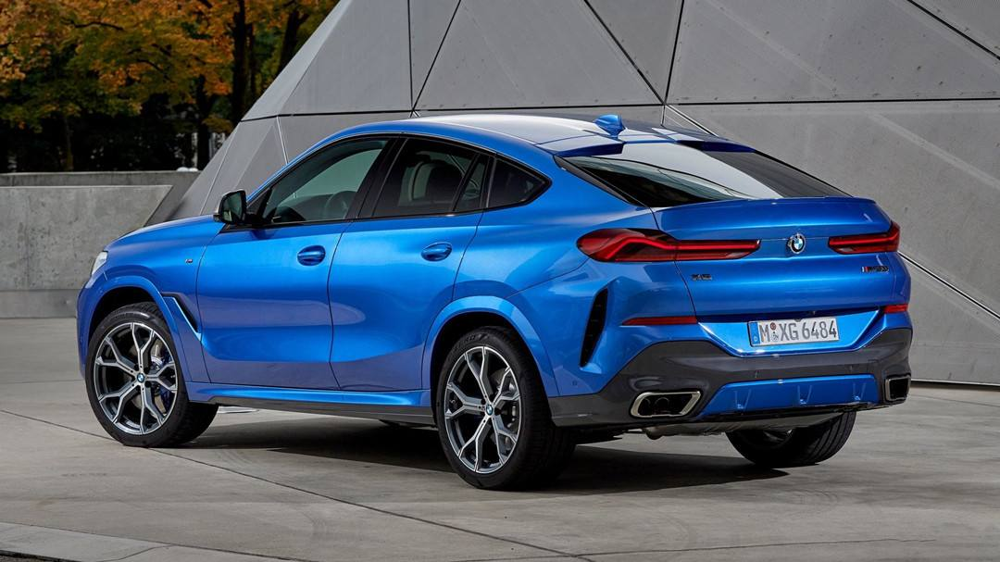

BMW has all kinds of cars from X1 to X7, the most famous of which
is X5 and X6. People always say that X6 leads the latest trend of SUV. I
will show you the reason. keep reading!

BMW X6 and X7
X6: Compared with the X5, which focuses on highway driving
performance, the X6 evolves more thoroughly in highway performance,
integrating the sports ability of sports cars and the multi-function of
SUVs in shape design and power control.According to BMW designer's
introduction, the tail design is his favorite, large tilt angle of the
rear windshield, huge L-shaped taillights, degraded tail wings and the
fierce exhaust pipe, of course, the most important thing is to have a
strong Coupe shape, looking at it is a kind of enjoyment. Many people
believe that it was its appearance that led the trend of SUV using coupe
tail.
X7: X7 is a new model of BMW, and it is also the first large SUV
of BMW. Its positioning is luxury business SUV. It integrates BMW's
latest technology, including laser headlights.